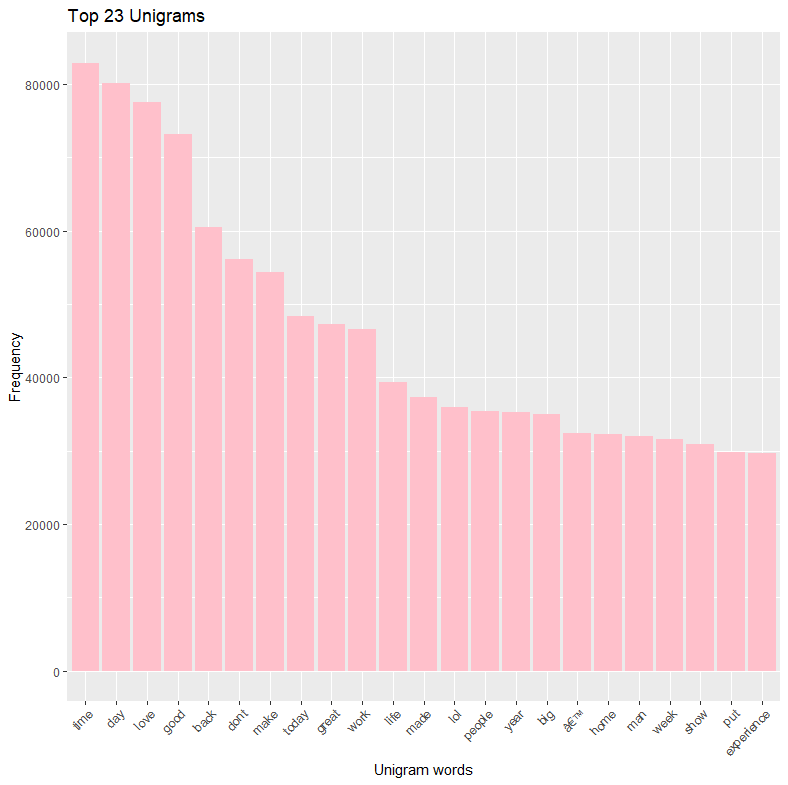
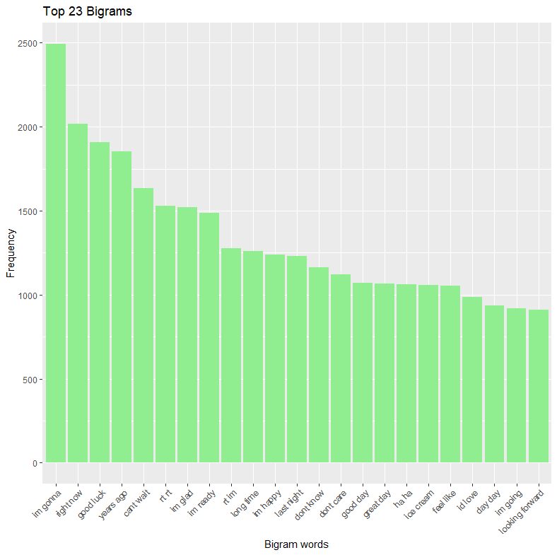
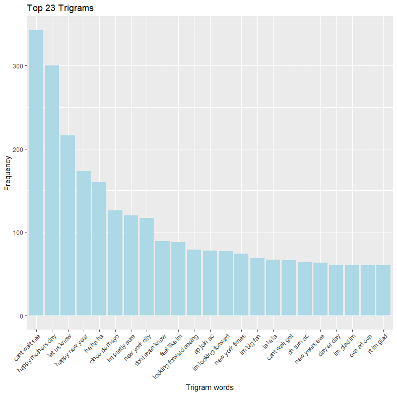
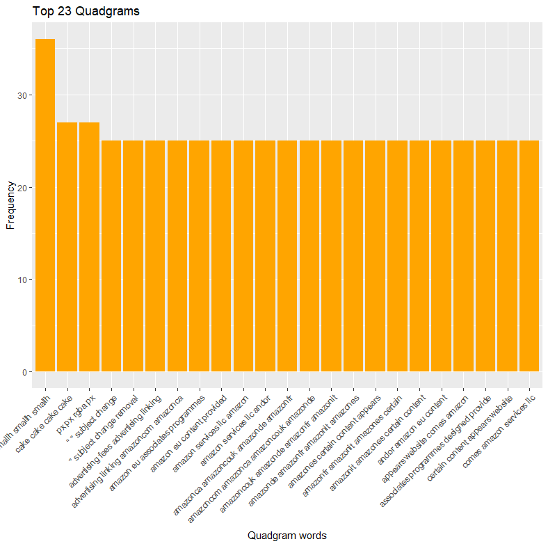

This WebApp is made with the help of shiny package from rstudio.
Reference for building ngram model and prediction model is taken from the website : "https://www.tidytextmining.com" and some online documentations on "tm package".
In this app User inputs word or words and the next word is predicted according to mostly used phrases.
Data is provided by coursera and contains data from multiple languages and from multiple sources. We only use English data from "Blogs", "News", and "Twitter".
First we clean data, in this step we are converting all the letters to lower case and removing punctuations, numbers and stopwords. Then we will strip white spaces and create a corpus. The Corpus is a collection of written texts, especially the entire works of a particular author or a body of writing on a particular subject. In this corpus is made from the sample of the data from sources. We are using samaple to save computer resources.
After cleaning of data the ngram models are made to explore data. We made Unigram, Bigram, Trigram, Quadgram models. This is basically making tokens of words by combining words i,e. one word into one token, two words into one token and so on. We will only make upto Quadgrams as making token of five is useless as no one uses phrases that long.
For prediction we made functions for bigrams, trigrams, quadgrams and ngrams.
Function "ngrams" take user input and split the words. Then it analyze the no. of words and determine whether it is bigram, trigram or quadgram. It then passes the words to the functions bigram, trigram or quadgram according to input.
Functions bigrams, trigrams and quadgrams takes input passed from ngrams function and the first words as input and then chooses the multiple words associated with the word, if it is trigram the function then analyze the second word and find the mostly used words with the previous word.
All this predictions are made after we made the data frames from the ngram models.
In this Shiny Application, we are using shinythemes package to create a ui better than the normal.
With the use of this package, user can create a themed application and also provides options for user to change theme according to them.
Exploratory Tab : It contains the analysis of the sample of the original data with most frequent words and least frequent words used with R Code.
Some Plots of the NGram Models are :
   